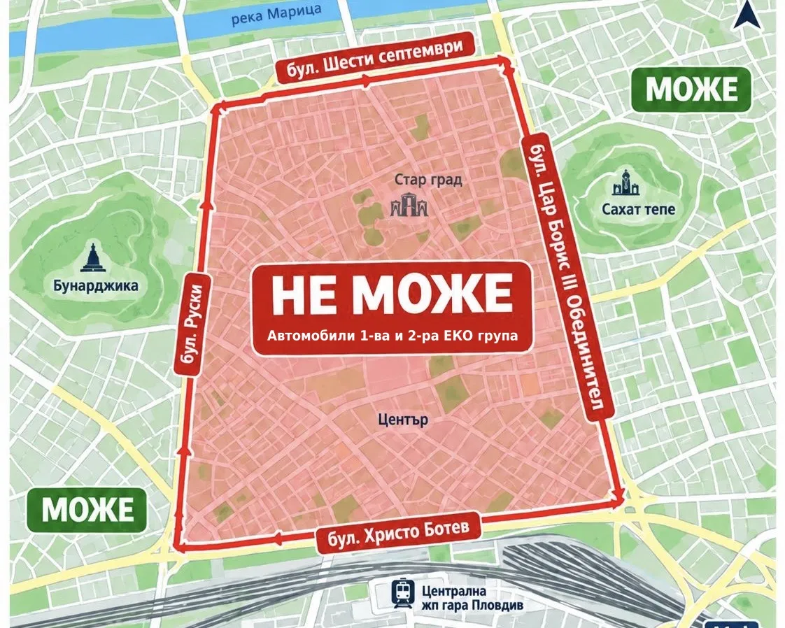

Основни изисквания за оборудване в Гърция за шофьорите през 2026 година

Гърция е сред най-предпочитаните дестинации за българските туристи, но гръцките изисквания за оборудването на автомобила се различават от българските. Незнанието не е извинение пред пътната полиция. Ето какво трябва да имате в колата, за да избегнете солени глоби през 2026 година[cite: 25]:
Основни изисквания за оборудване в Гърция:
- Пожарогасител: Задължителен с гасителна ефективност минимум 8A 34B C (най-сигурен е вариант от 2 кг) с валиден стикер за поддръжка от лицензирана фирма[cite: 25].
- Аптечка (Нови изисквания 2026): От 1 юли 2026 г. влизат в сила нови изисквания за стандарт DIN 13164:2022 (задължителни от 1 януари 2027 г.), включващи изотермично одеяло, маски и стерилни превръзки[cite: 25].
- Аварийен триъгълник и жилетка: Триъгълникът се поставя на 100 метра при авария, а светлоотразителната жилетка задължително се държи в купето (не в багажника)[cite: 25].
Важни гръцки правила и санкции
В Гърция важи строг кодекс с тежки глоби: коланите за всички пътници са задължителни (глоба до 350 евро), използването на телефон без hands-free се наказва строго, антирадарите са забранени с конфискация, а пушенето в кола с дете под 12 години носи глоба до 1500 евро[cite: 25].
Преди път към Гърция или друга дестинация, преминете надежден годишен технически преглед (ГТП) и проверете автомобила си при нас в с. Труд[cite: 25].
Зона с ниски емисии в Пловдив: какво трябва да знаеш от 1 октомври 2026 г.

От 1 октомври 2026 г. в Пловдив влиза в сила първата зона с ниски емисии на вредни вещества. Целта на мярката е да се намалят емисиите на фини прахови частици (ФПЧ2,5 и ФПЧ10) и азотен диоксид, като се ограничи движението на най-замърсяващите автомобили в централната част на града[cite: 13].
Зона „Малк ринг“ – в сила от 1 октомври 2026 г.
Зоната е оградена от ключовите булеварди[cite: 13]:
- бул. „Руски“[cite: 13]
- бул. „Цар Борис III Обединител“[cite: 13]
- бул. „Христо Ботев“[cite: 13]
- бул. „Шести септември“[cite: 13]
Ограничение: В периода от 1 октомври до 30 април е забранено движението на автомобили с I и II екологична група[cite: 13].
За кои автомобили важат ограниченията?
Забраната се отнася за леки автомобили с не повече от 8 места за пътници и лекотоварни автомобили с допустима максимална маса до 3,5 тона[cite: 13].
Еко групата се определя задължително при преминаване на годишен технически преглед (ГТП) и се отпечатва на екостикера. За да сте сигурни в категорията си и да преминете преглед навреме, заповядайте при нас в Групкар-07[cite: 13].
Необходими документи за преминаване на ГТП при нас в с. Труд, Карловско шосе

За да преминете бързо и безпроблемно годишен технически преглед в нашия пункт, носете следните документи[cite: 11]:
- Свидетелство за регистрация на МПС (голям и малък талон)[cite: 11].
- Документ за самоличност на водача или лицето, което представя автомобила[cite: 11].
- Валидна застраховка „Гражданска отговорност“ (проверява се електронно, но е препоръчително да е налична)[cite: 11].
- Удостоверение за предходен преглед (желателно, но не задължително)[cite: 11].
- За автомобили с газови уредби (АГУ) – документ за изправност на газовата уредба[cite: 11].
Иновация в помощ на шофьорите: Представяме Ви безплатното мобилно приложение „Групкар Мобил“

Автокомплекс Групкар-07 в с. Труд (на изхода в посока Граф Игнатиево на Карловско шосе) се утвърждава като един от малкото пунктове за ГТП в България, който предлага толкова напредничави, изцяло безплатни дигитални решения за улеснение на своите клиенти[cite: 18].
- Дигитален гараж за вашите МПС: Съхранявайте на едно сигурно място всички задължителни документи – ГТП, Гражданска отговорност, Каско, винетки и такси[cite: 18].
- Автоматично напомняне и SMS известия: Система, която автоматично ви изпраща известия преди изтичането на документите[cite: 18].
- Интелигентен калкулятор за път и гориво: Вграден прецизен калкулятор за разход и разстояние в България и чужбина[cite: 18].
Застрахователни услуги и брокер в Автокомплекс Групкар-07

При нас можете бързо и лесно да сключите задължителна застраховка „Гражданска отговорност“, Автокаско, Зелена карта, имуществени и медицински застраховки с водещи компании в бранша.
Автокомплекс Групкар-07, ГТП с. Труд
Карловско шосе (на изхода в посока Граф Игнатиево)
Искате да запазите час или да проверите еко категорията си?
📞 Звънни: 0888 837 482 Запази час в приложението